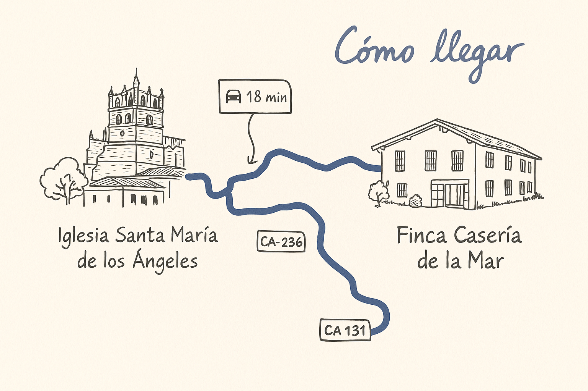

¡Estáis invitados!
¡Nos casamos en Cantabria!
Toda la información: programa, iglesia, finca, hoteles, menú, transporte y RSVP.
Confirmar asistenciaDetalles
Cuándo
Fecha: Sábado, 18 de julio de 2026
Ciudad: San Vicente de la Barquera, Cantabria
Dónde
Iglesia: Iglesia de Santa María de los Ángeles
Finca: Finca Casería de la Mar
Rioturbio s/n, 39528, Cantabria, España
Programa
- PREBODA en San Vicente (detalles TBC)
- Ceremonia — Iglesia de Nuestra Señora de los Ángeles (San Vicente de la Barquera)
- Celebración en Finca Casería de la Mar hasta la 01:00
Iglesia & Parking
Iglesia de Santa María de los Ángeles
La iglesia está en un alto y hay pocos sitios para aparcar. Recomendamos aparcar en:
Parking verano CEIP Mata Linares (a ~400 m de la iglesia)
Minibuses: Pondremos minibuses que irán desde el parking hasta la iglesia desde las 11:30.
Sketch del recorrido
Un croquis a mano del trayecto de la iglesia a la finca:
Finca & Alojamiento
Finca Casería de la Mar
Celebración desde el final de la ceremonia hasta las 01:00.
Habrá transporte desde la finca hasta San Vicente/Comillas.
Alojamiento (recomendaciones)
Os recomendamos reservar con tiempo ya que julio es temporada alta. Si un hotel aparece sin disponibilidad es posible que aún no hayan abierto reservas. En ese caso, llamad o escribid un email.
- Hotel Mar Comillas
- Hotel Abba
- Hotel Comillas
- Apartamentos Boutique Fuente Real (Comillas)
- Marina de Campios
- abba Comillas Apartments
Habrá transporte a la iglesia, a la finca y de vuelta desde los diferentes alojamientos.
Enlaces / Contactos
(Añadiremos enlaces de reserva cuando estén disponibles)


RSVP
Por favor, confirmad asistencia lo antes posible. Fecha límite sugerida: 15 de junio de 2026.
Campos que pediremos (para Google Form)
- Nombre y apellidos
- ¿Asistirás? (Sí/No)
- Dirección del invitado
- ¿Traes +1? (Sí/No) — Nombre y apellidos del +1
- ¿Vienes a la preboda? (Sí/No) — ¿Con +1?
- ¿Dónde os alojaréis? (Comillas / San Vicente / Santander / Otro + texto)
- Intolerancias / alergias / preferencias
- ¿Necesitas transporte el día de la boda?
FAQ
Niños
Los más pequeños siempre son bienvenidos! Avísanos si vienes con niños para que contemos con su asistencia.
Transporte
Habrá autobuses entre la iglesia y finca y entre la finca y Comillas/San Vicente después de la celebración. Compartiremos horarios más cerca de la fecha.
Aparcamiento
Recomendamos aparcar en el parking del CEIP Mata Linares (a ~400 m de la iglesia). Habrá minibuses subiendo a la puerta de la iglesia desde las 11:30.
Playlist
Id calentando motores con nuestra playlist: